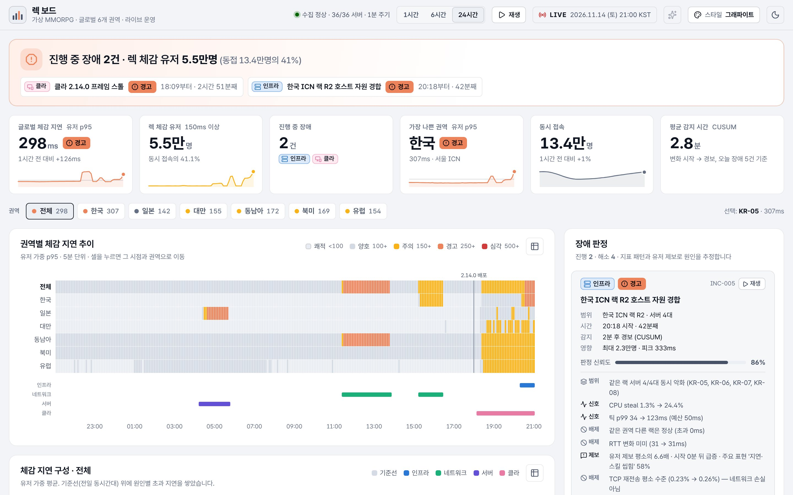
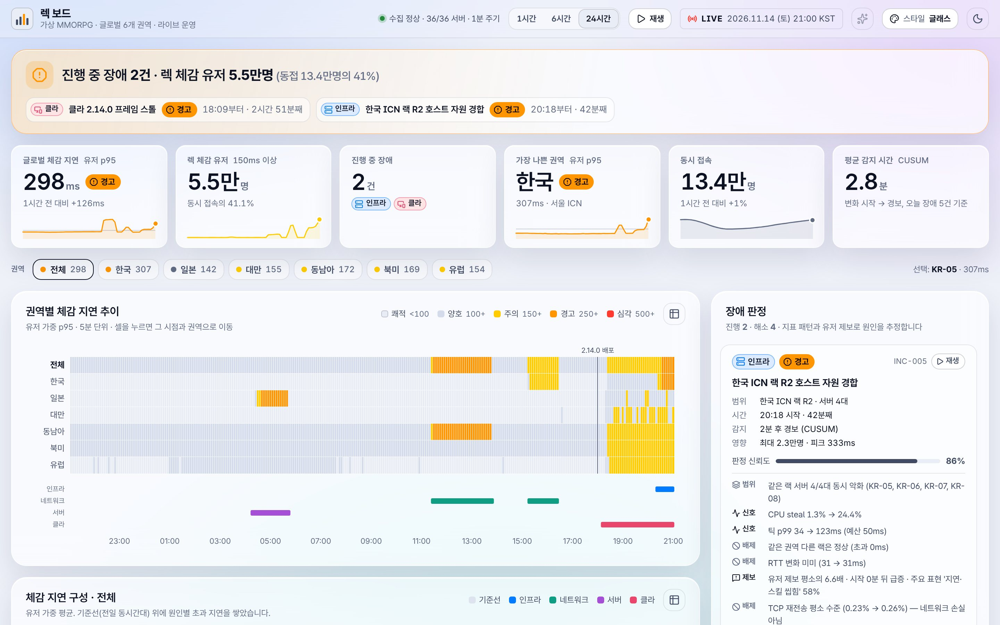
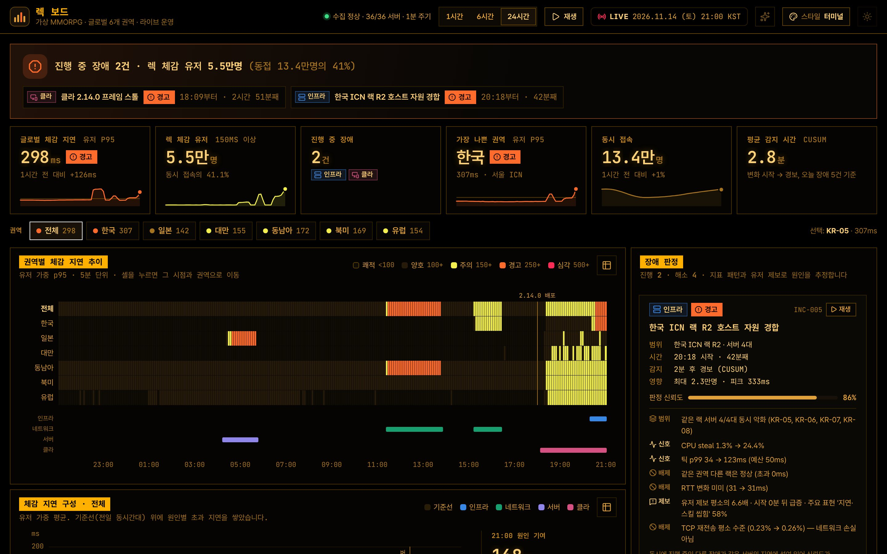

렉 보드 · 스타일 시안 5종
렉 보드 스타일 비교
같은 데이터·같은 화면 구조에 표현 방식만 바꾼 다섯 가지 시안입니다. 모든 시안은 같은 원칙을 지킵니다 — 원인 4색은 색각이상 검증을 통과한 팔레트, 상태는 색 + 아이콘 + 글자, 이중 축 없음. 보드 상단의 스타일 메뉴로 실시간 전환하거나, 각 시안의 링크로 바로 열 수 있습니다.
관제실 · 장애 대응
콕핏
칠흑 배경에 흰 수치, 경보 색은 경보에만. 멀리서 한눈에 읽히는 정도가 가장 높습니다. 기본값으로 적용했습니다.
보고 · 공유 · 사후 분석
에디토리얼
가장 고급스럽고 읽기 편한 시안. 큰 숫자와 괘선이 보고서처럼 읽혀 경영진·타 팀 공유에 맞습니다.
일상 데스크
그래파이트
이전 기본값. 오래 봐도 피로가 적고 다크·라이트를 모두 지원합니다.
한눈에 비교 (설계 의도 기준의 주관 평가)
시안 원거리 시인성 고급감 정보 밀도 장시간 관제 피로 테마
그래파이트 낮음 다크·라이트 콕핏 낮음 다크 전용 터미널 보통 (단색 대비) 다크 전용 에디토리얼 어두운 관제실에선 눈부심 라이트 전용 글래스 보통 (배경 움직임 없음) 다크·라이트
카드 모서리의 청록 브래킷이 계기판 베젤 역할을 하고, 라벨은 청록·수치는 흰색으로 역할이 갈립니다.
표현 방식
서체 B612 — 에어버스가 조종석 화면의 판독성을 위해 ENAC·툴루즈 대학과 연구해 만든 오픈소스 서체
칠흑(#020406) 배경 위 흰 판독값, 청록 라벨·선택 — 항공 화면의 "흰 값 / 청록 조작" 관례
노랑·앰버·빨강은 경보에만 — 항공 규정(25.1322)이 빨강·앰버를 경고·주의 전용으로 묶는 원칙과 같음
모서리 베젤 브래킷, 2px 모서리, 대문자 라벨
잘 맞는 곳 · 주의
관제실 벽 화면, 야간 대응 — 어두운 공간에서 눈부심 없이 숫자가 튐
상태색이 화면에 거의 없어 경보가 생기면 즉시 눈에 띔
주의 B612에는 한글이 없어 한글은 Pretendard로 대체 — 영문·숫자에만 항공 서체가 적용됨
참고: B612 (GitHub) · Fontsource B612 · EASA CS 25.1322 경보 색 · FAA AC 25-11 전자 디스플레이
청색으로 살짝 기운 슬레이트 중립색, 무채색 크롬. 정상은 조용하고 이상만 색이 납니다.
표현 방식
무채색 크롬 — 색은 데이터와 상태에만
둥근 카드(14px)와 헤어라인 테두리, 적당한 밀도
다크·라이트 모두 같은 토큰 구조
잘 맞는 곳 · 주의
매일 쓰는 데스크 화면, 장시간 모니터링
주의 개성이 약해 다른 관제 도구와 구분이 덜 됨

그래파이트 라이트.
패널 불투명도를 60% 이상으로 두어 배경이 비쳐도 글자 대비가 유지됩니다.
표현 방식
반투명 패널 + 블러 22px + 채도 160%, 안쪽 하이라이트 선
정지된 오로라 그라데이션 배경 (움직이지 않음)
22px 둥근 카드, 알약형 배지, Inter 수치
잘 맞는 곳 · 주의
시연·발표, 경영진 데모 — 첫인상이 가장 화려함
주의 2025년 Liquid Glass는 반투명 때문에 가독성 비판을 받았고, Apple도 투명도 조절 옵션을 추가했습니다. 이 시안은 패널을 충분히 불투명하게 했지만, 관제 기본값으로는 권하지 않습니다.

글래스 라이트.
참고: MacRumors — Liquid Glass 비판 · Infinum — 접근성 검토 · Digital Trends — 투명도 조절 추가

UI 전체가 앰버 단색이라 데이터 색(원인·상태)이 가장 또렷하게 튑니다.
표현 방식
앰버 단색 크롬, 카드 제목은 앰버 반전 막대, 큰 수치에 옅은 인광 번짐
등폭 서체(JetBrains Mono), 각진 모서리, 좁은 간격 — 정보 밀도 최고
원인 4색은 앰버와 겹치지 않는 청·청록·보라·자홍
잘 맞는 곳 · 주의
숙련된 운영자의 고밀도 모니터링, 여러 화면을 동시에 띄우는 벽
주의 크롬 무채색 원칙을 의도적으로 깹니다. 앰버 글자와 노란 "주의" 상태가 비슷한 계열이라 상태 배지의 아이콘·글자에 의존도가 높습니다.
참고: Fast Company — 금융 터미널의 앰버 화면 · Tech at Bloomberg — 색 접근성 설계
모든 스크린샷은 같은 시각(2026-11-14 21:00 KST)의 가상 데이터입니다. 원인 4색은 스타일마다 dataviz 검증기로 확인했습니다(인접쌍 색각이상 ΔE ≥ 8, 정상시 ΔE ≥ 15, 면 대비 3:1 이상).